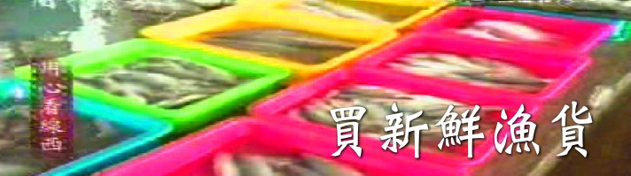
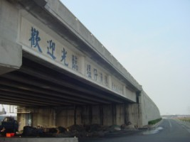
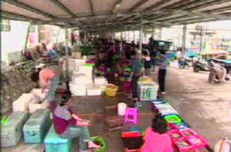

塭仔港內一條鐵皮搭建的長廊中，十多個攤位整齊排列，這裡的攤位幾乎是每一艘船就有一個攤位，通常都由先生捕魚、太太賣魚，因為沒有中盤商，以至於薄利多銷，種類多又便宜，如魟魚、鱸魚、大白鯧、沙蝦、石斑、竹鯃…，另外鹿港名產蝦猴這裡也有賣。 在塭仔港的港口前有一個觀光漁市，那裡有很多種不同的魚類，任由你選擇。漁民大約在凌晨二、三點左右出海，至凌晨五點多進港，在那時候的漁貨是最多也是最新鮮的時候，大多批發商也會趁著這個時候來大量批發；直到下午三點到六點是人潮擁入漁市的黃金時間。週末假日時，會有很多的外來遊客到漁市選購，這時是賣商最快樂的時候，大約天色漸漸暗下來，市場中的遊客才依依不捨的離開，漁販們也準備收攤。 雖然這裡沒有全台灣的名氣，但是對許多線西附近鄉鎮的人民而言，塭仔港永遠是他們心目中的第一。

